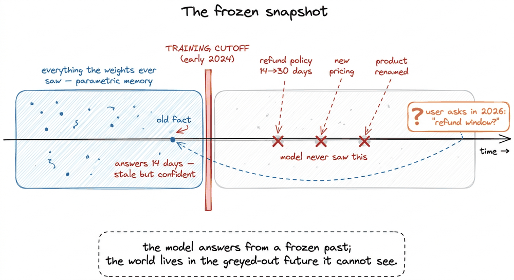
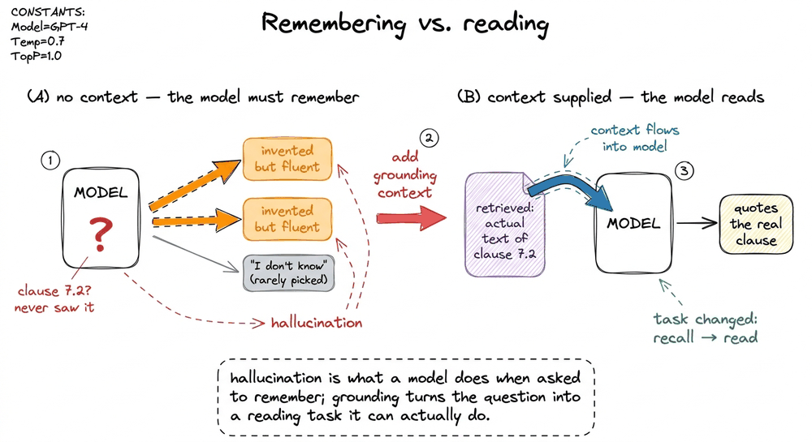
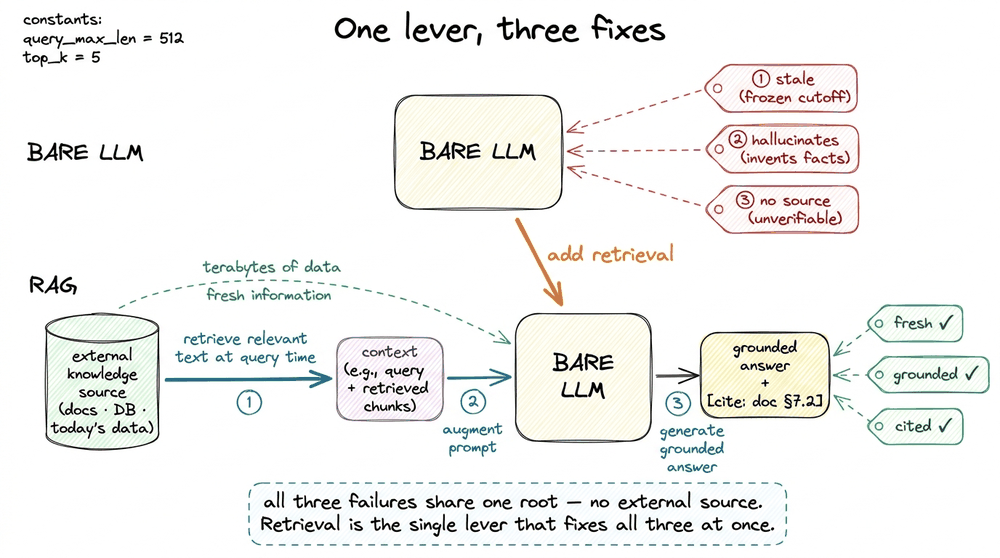
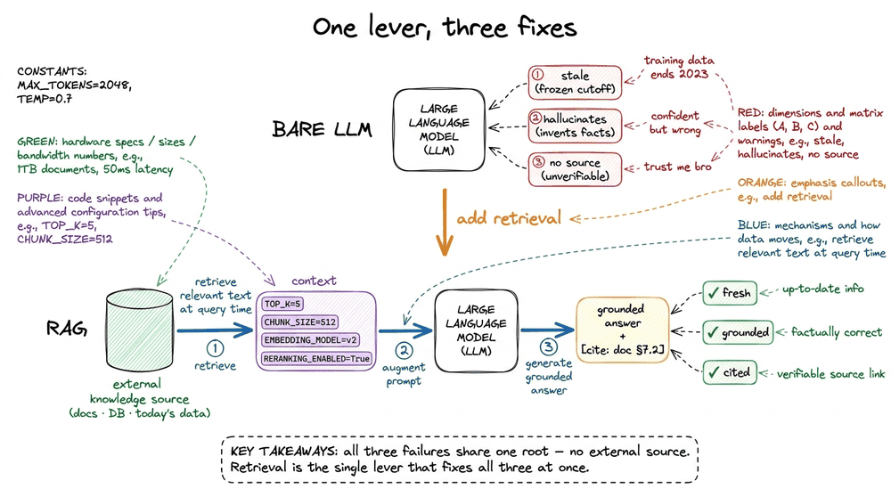

Why RAG Exists
📝 13 annotationsWhy RAG Exists
Ask a large language model what it doesn't know, and it will still answer. That single sentence is the whole reason this book exists. A model that had the grace to say "I have no idea" when it had no idea would be a modest, trustworthy tool. Instead, a bare LLM answers everything with the same fluent confidence — the questions it was trained on, the questions it wasn't, and the questions whose true answers changed the week after its training data was frozen. It cannot tell the three apart, and neither can you from the outside. Retrieval-augmented generation (RAG) is the engineering response to exactly this problem, and before we build a single piece of it I want you to feel why it has to exist. Not as a trend, but as the fix to three specific, demonstrable failures of a model on its own.
Let me put the model in the witness box and cross-examine it, one failure at a time.
The model is a snapshot, and the world keeps moving
Everything an LLM "knows" was pressed into its weights during training and then frozen. This is its parametric memory — knowledge stored in billions of numbers, learned once, never updated on its own.11 This is the precise opposite of how a database works. A database looks things up at query time from mutable storage; a bare model has no storage to look up — it has weights that were fixed the moment training ended. That is why you cannot "just tell it" a new fact and have it stick across sessions. The instant training ends, the weights stop learning. Everything that happens in the world after that moment — a product that ships, a policy that changes, a price that moves, a person who takes a new job — is simply not in there.
We call the boundary the training cutoff, and it is a harder wall than people expect. Suppose your model's knowledge was frozen in early 2024 and a customer asks it, in mid-2026, "what's our current refund window?" Your company changed that policy from 14 days to 30 days last quarter. The model has never seen the new number. It will not pause. It will confidently tell the customer 14 days, because in its frozen world that is still true, and a wrong-but-fluent answer is indistinguishable, on the surface, from a right one.

figure rendering · A bare LLM's knowledge stops dead at its training cutoff. Anything thaYou cannot fix this by waiting for a better model, because the better model has the same disease with a later cutoff — it too will be stale the day after it ships. And you cannot fix it by making the model bigger; a bigger snapshot is still a snapshot. Stale knowledge is not a size problem. It is a plumbing problem — the model has no pipe connecting it to fresh information, and the only real cure is to build that pipe.
There is a sharper version of this same wall, and it is the one that actually drives most production RAG. Staleness is about facts that changed. But an enormous amount of what your users ask about was never public in the first place, so it was never in any training set at any cutoff. Your private data (the internal wiki, the contracts folder, last night's support tickets, the tables in your own database) was never scraped from the open web, so no model, however recent or large, has ever seen a single token of it. Ask a bare model "what did ticket #4471 conclude?" and there is no frozen-but-old answer to recover, there is simply nothing there at all. This is why "just fine-tune it on our docs" is the wrong instinct so often: you would be paying to burn private facts into weights that go stale the moment a doc is edited, when the honest shape of the problem is a lookup, not a memory. The two motivations stack: the world moves on (staleness) and the model was never let into your building in the first place (private data), and retrieval is the same pipe that answers both.

figure rendering · A bare model fails on two different regions of knowledge: public factsThe model hallucinates, and it hallucinates most where you can least afford it
Now push on the second failure. Ask the model something genuinely outside its knowledge — a fact about your internal systems, a niche citation, a specific clause in a contract it never saw — and watch what it does. It does not return empty. It hallucinates: it generates a plausible, fluent, well-formed answer that is simply not true.
This is not a bug someone forgot to fix; it falls out of what the model is. An LLM is trained to predict the next token that makes the text look like its training data — coherent, confident, human. "I don't know" is a rare shape in that data, so the model rarely produces it. When it lacks a fact, it does the only thing it was built to do: it produces the most probable-sounding continuation, and probable-sounding is not the same as true.2 The unnerving part is the calibration gap. A person who is unsure usually sounds unsure — they hedge, they slow down. An LLM's fluency is roughly constant whether it's reciting a well-known fact or inventing a fake legal citation whole-cloth. The confidence signal you rely on with humans is broken here, which is exactly why unverifiable answers are dangerous.
Here is the napkin version of why grounding fixes it. Imagine the model is choosing its next words and the honest continuations aren't clearly the most likely ones:
Question: "What does clause 7.2 of our vendor contract say?"
Bare model — next-token probabilities (nothing to anchor on):
"...it states the vendor must..." p = 0.34 ← fluent, invented
"...a 30-day cure period applies..." p = 0.29 ← fluent, invented
"I don't have that clause." p = 0.05 ← rarely the top choice
→ it samples a confident guess. That guess IS the hallucination.Now change one thing. Paste the actual text of clause 7.2 into the prompt just before the question. The task the model faces is no longer "recall a clause you may never have seen" — an invitation to invent — but "read the clause I just handed you and quote it back." That is a task the model is genuinely excellent at, and the probability mass collapses onto the grounded, correct continuation. We did not make the model smarter. We changed its job from remembering to reading — and reading is the job it can actually do reliably.

figure rendering · With no context the model must recall and tends to invent; hand it theThe model can't show its work, and unverifiable is unusable
The third failure is the quietest and, in production, often the most disqualifying. Even when a bare model happens to be right, it cannot tell you where the answer came from. There is no receipt. The answer is a smoothie of a trillion training tokens; you cannot point to the ingredient. So when a lawyer, a doctor, a support agent, or an auditor asks the reasonable follow-up — "says who? show me the source" — the bare model has nothing to show.33 This is why "the model got the right answer in my demo" is such a treacherous signal. Right-without-a-source is only accidentally useful; you got lucky and you can't tell when your luck runs out. In a regulated setting, an unciteable correct answer and a confident wrong one carry nearly the same liability, because a human still has to go verify both from scratch.
For a toy or a brainstorm, fine. For anything where being wrong has a cost, an answer nobody can verify is an answer nobody should act on. No citations means no trust, and no trust means no production. A support answer a supervisor can't audit, a research claim with no paper attached, a policy quote with no document behind it — these don't fail loudly with an error message. They fail silently, as confident sentences that happen to be wrong, and you find out from the customer.
Retrieval is the one fix that lands on all three
Step back and notice something lovely: the three failures share a single root cause. Stale knowledge, hallucination, and missing citations are all symptoms of the same fact — the model is trying to answer purely from parametric memory, its frozen internal store, with no connection to an external, up-to-date, inspectable source of truth. Fix that one thing and all three symptoms move together.
That fix is retrieval. Before the model answers, we go fetch the relevant text from an external knowledge source — your documents, your database, today's data — and place it directly in the prompt as context. Then we ask the model to answer using that context, and to cite it. Retrieval-augmented generation, introduced by Lewis and colleagues in 2020, is exactly this move: don't rely only on what the weights remember — augment generation with knowledge retrieved at query time.44 RAG is deliberately not fine-tuning, and confusing the two wastes a lot of effort. Fine-tuning changes the weights to teach a skill or a style, and it is slow, offline, and forgetful of specifics. RAG changes the context at inference to supply fresh facts, and it is instant to update — re-index a document and the next answer already reflects it. They compose beautifully; they do not substitute for each other. We spend a whole chapter on this in rag-vs-finetuning-vs-long-context.
Walk the three failures back through this one lever and watch them fall:
- Stale knowledge — the retrieved document holds today's refund policy, so the model reads "30 days" instead of reciting the frozen "14." Update the source, and the next answer is already current. No retraining.
- Hallucination — with the real clause sitting in the prompt, the model's job flips from recall to read, and the probability mass lands on the grounded answer. Instruct it to answer only from the provided context and to say "I don't know" when the context is silent, and the invented continuations lose.
- No citations — because every fact in the answer traces to a specific retrieved chunk, the model can point at its sources. The answer arrives with a receipt, and a human can verify it in seconds.

figure rendering · The three failures of a bare LLM share one root cause: no connection tThat is the entire thesis of RAG in a picture: the failures were never really three problems. They were one problem — a model cut off from the world — wearing three costumes.
The honest caveat, so you don't oversell it
Retrieval is a fix, not a magic wand, and it is worth being precise about its edge so you build with clear eyes. RAG grounds the model in whatever you retrieve — which means it is only as good as the retrieval. Hand the model the wrong chunk and it will faithfully ground its answer in the wrong thing.55 This is the failure mode that quietly eats naive RAG systems: retrieval that misses the relevant passage, or dumps ten near-duplicates and buries the one that mattered. It's why half of this book — chunking, embeddings, re-ranking, evaluation — is really about making sure the right text reaches the model. Grounding on garbage is still garbage. The whole discipline that follows — how you cut documents into chunks, how you turn text into vectors, how you search millions of them in milliseconds, how you re-rank and then measure whether any of it worked — exists to make sure the text that reaches the model is the text that actually answers the question.
So here is the bold takeaway to carry into every chapter that follows. A bare LLM answers from a frozen, un-sourced memory; RAG lets it answer from a live, cited source. The entire craft is getting the right source in front of the model at the right moment. Everything else in this book is engineering in service of that one sentence.
In the next chapter we make the idea precise — a clean definition, the exact vocabulary, and the line between parametric memory and retrieved context — in what-is-retrieval-augmented-generation.